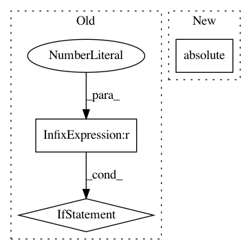

2638f41eaec8cde46a09da8a211baaf0c744148b,pykrige/core.py,,krige,#Any#Any#Any#Any#Any#Any#,188
Before Change
// This function is now only used for the statistics calculations.
zero_index = None
if np.where((np.absolute(x - coords[0]) <= 1e-15) & (np.absolute(y - coords[1]) <= 1e-15))[0].size > 0:
zero_value = True
else:
zero_value = False
x1, x2 = np.meshgrid(x, x)
y1, y2 = np.meshgrid(y, y)
d = np.sqrt((x1 - x2)**2 + (y1 - y2)**2)
bd = np.sqrt((x - coords[0])**2 + (y - coords[1])**2)
After Change
y1, y2 = np.meshgrid(y, y)
d = np.sqrt((x1 - x2)**2 + (y1 - y2)**2)
bd = np.sqrt((x - coords[0])**2 + (y - coords[1])**2)
if np.any(np.absolute(bd) <= 1e-10):
zero_value = True
zero_index = np.where(bd <= 1e-10)[0][0]
In pattern: SUPERPATTERN
Frequency: 3
Non-data size: 3
Instances
Project Name: bsmurphy/PyKrige
Commit Name: 2638f41eaec8cde46a09da8a211baaf0c744148b
Time: 2015-02-15
Author: murphybe@gdemac.oce.orst.edu
File Name: pykrige/core.py
Class Name:
Method Name: krige
Project Name: ilastik/ilastik
Commit Name: 219459f15476426276e24329cdb6f091b5f7cf41
Time: 2019-06-26
Author: tomaz.vieira@embl.de
File Name: ilastik/applets/dataSelection/dataSelectionGui.py
Class Name: DataSelectionGui
Method Name: _createDatasetInfo
Project Name: deeptools/HiCExplorer
Commit Name: e8a8edec508fcf886d5c6329ff0729b1cff845e8
Time: 2018-09-04
Author: wolffj@informatik.uni-freiburg.de
File Name: hicexplorer/utilities.py
Class Name:
Method Name: exp_obs_matrix_norm